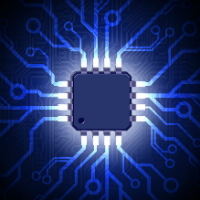
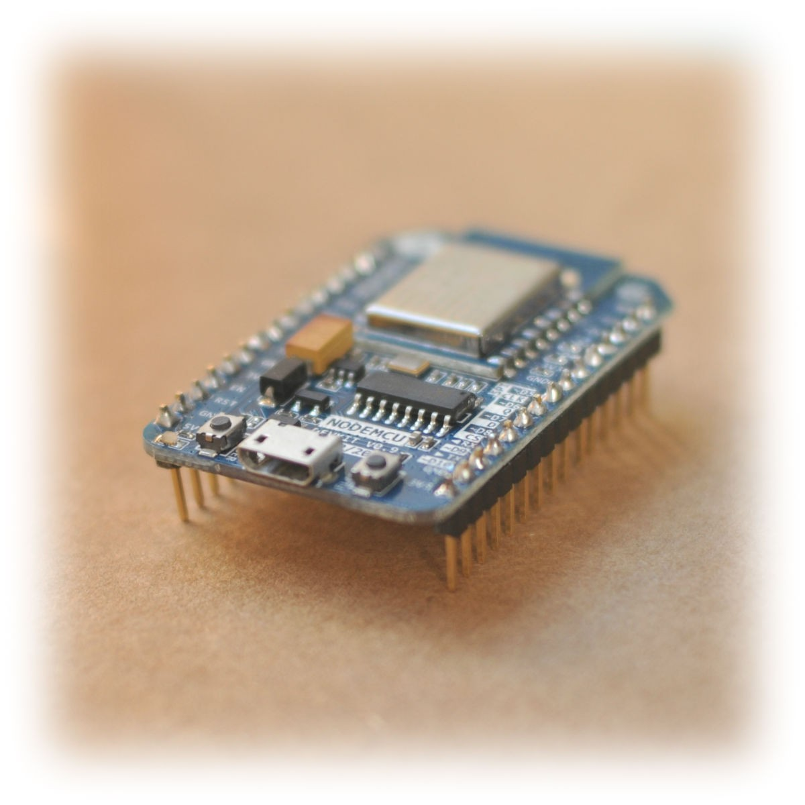
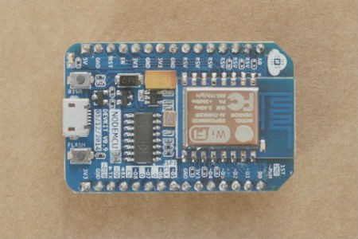
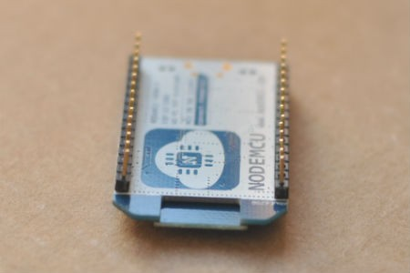
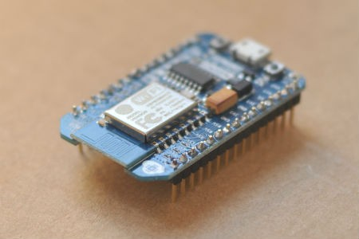

NodeMcu
超简单的物联网开发平台
一款开源快速硬件原型平台，包括固件和开发板，用几行简单的Lua脚本就能开发物联网应用
特点
开源，交互式，可编程，低成本，简单，智能，WI-FI硬件

像Arduino一样操作硬件IO
提供硬件的高级接口，可以将应用开发者从繁复的硬件配置、寄存器操作中解放出来。用交互式Lua脚本，像arduino一样编写硬件代码！
用Nodejs类似语法写网络应用
事件驱动型API极大的方便了用户进行网络应用开发，使用类似Nodejs的方式编写网络代码，并运行于5mm*5mm大小的MCU之上，加快您的物联网开发进度。
超低成本的WI-FI模块
用于快速原型的开发板，集成了售价低于10人民币WIFI芯片ESP8266。我们为您提供性价比最高的物联网应用开发平台。
开发板
基于乐鑫esp8266的NodeMcu开发板，具有GPIO、PWM、I2C、1-Wire、ADC等功能，结合NodeMcu 固件为您的原型开发提供最快速的途径。


包含usb串口，即插即用

10 GPIO, 每个都能配置为 PWM, I2C, 1-wire

FCC 认证的WI-FI模块，内置PCB天线
示例
拿到开发板了？我们开始吧
连接到路由器
print(wifi.sta.getip())
--nil
wifi.setmode(wifi.STATION)
wifi.sta.config("SSID","password")
print(wifi.sta.getip())
--192.168.18.110
像Arduino一样操作IO
pin = 1
gpio.mode(pin,gpio.OUTPUT)
gpio.write(pin,gpio.HIGH)
gpio.mode(pin,gpio.INPUT)
print(gpio.read(pin))
简单的HTTP客户端
-- A simple http client
conn=net.createConnection(net.TCP, false)
conn:on("receive", function(conn, pl) print(pl) end)
conn:connect(80,"121.41.33.127")
conn:send("GET / HTTP/1.1\r\nHost: www.nodemcu.com\r\n"
.."Connection: keep-alive\r\nAccept: */*\r\n\r\n")
更简单的HTTP服务器
-- a simple http server
srv=net.createServer(net.TCP)
srv:listen(80,function(conn)
conn:on("receive",function(conn,payload)
print(payload)
conn:send("<h1> Hello, NodeMcu.</h1>")
end)
end)
PWM操作
function led(r,g,b)
pwm.setduty(1,r)
pwm.setduty(2,g)
pwm.setduty(3,b)
end
pwm.setup(1,500,512)
pwm.setup(2,500,512)
pwm.setup(3,500,512)
pwm.start(1)
pwm.start(2)
pwm.start(3)
led(512,0,0) -- red
led(0,0,512) -- blue
闪烁LED
lighton=0
tmr.alarm(0,1000,1,function()
if lighton==0 then
lighton=1
led(512,512,512)
-- 512/1024, 50% duty cycle
else
lighton=0
led(0,0,0)
end
end)
启动文件
--init.lua will be excuted
file.open("init.lua","w")
file.writeline([[print("Hello World!")]])
file.close()
node.restart() -- this will restart the module.
用定时器来循环执行
tmr.alarm(1,5000,1,function() print("alarm 1") end)
tmr.alarm(0,1000,1,function() print("alarm 0") end)
tmr.alarm(2,2000,1,function() print("alarm 2") end)
-- after sometime
tmr.stop(0)
纯Lua写的telnet服务器
-- a simple telnet server
s=net.createServer(net.TCP,180)
s:listen(2323,function(c)
function s_output(str)
if(c~=nil)
then c:send(str)
end
end
node.output(s_output, 0)
-- re-direct output to function s_ouput.
c:on("receive",function(c,l)
node.input(l)
--like pcall(loadstring(l)), support multiple separate lines
end)
c:on("disconnection",function(c)
node.output(nil)
--unregist redirect output function, output goes to serial
end)
print("Welcome to NodeMcu world.")
end)
与传感器接口
-- read temperature with DS18B20
t=require("ds18b20")
t.setup(9)
addrs=t.addrs()
-- Total DS18B20 numbers, assume it is 2
print(table.getn(addrs))
-- The first DS18B20
print(t.read(addrs[1],t.C))
print(t.read(addrs[1],t.F))
print(t.read(addrs[1],t.K))
-- The second DS18B20
print(t.read(addrs[2],t.C))
print(t.read(addrs[2],t.F))
print(t.read(addrs[2],t.K))
-- Just read
print(t.read())
-- Just read as centigrade
print(t.read(nil,t.C))
-- Don't forget to release it after use
t = nil
ds18b20 = nil
package.loaded["ds18b20"]=nil